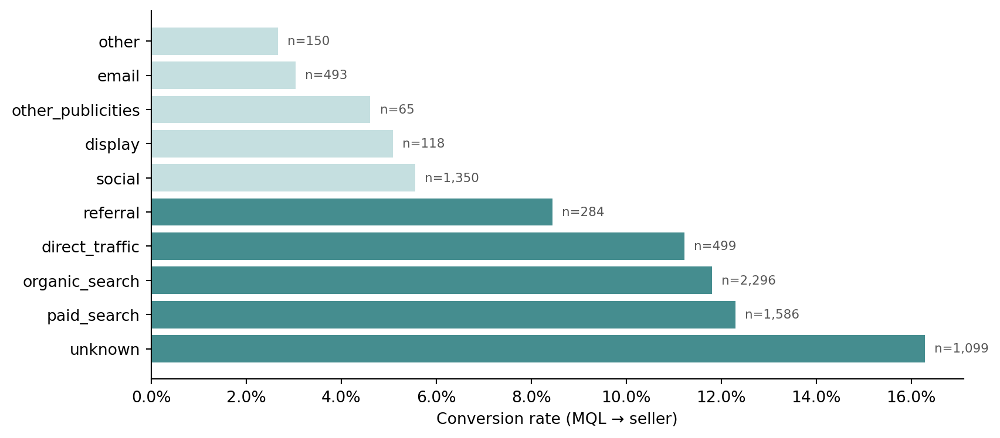
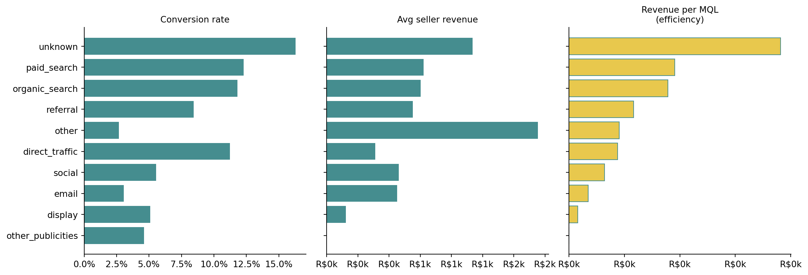

import os
import pandas as pd
import matplotlib.pyplot as plt
import matplotlib.ticker as mticker
from dotenv import load_dotenv
load_dotenv()
OLIST_DIR = os.path.join(os.environ["DATA_DIR"], "olist")
mql = pd.read_csv(os.path.join(OLIST_DIR, "olist_marketing_qualified_leads_dataset.csv"))
closed_deals = pd.read_csv(os.path.join(OLIST_DIR, "olist_closed_deals_dataset.csv"))
order_items = pd.read_csv(os.path.join(OLIST_DIR, "olist_order_items_dataset.csv"))
orders = pd.read_csv(os.path.join(OLIST_DIR, "olist_orders_dataset.csv"))DRAFT Acquisition Economics: CAC, Payback Period, and the LTV:CAC Ratio
Python
Analytics
Business Metrics
Olist
CAC is the cost to acquire one customer. The LTV:CAC ratio tells you whether the unit economics are sustainable. We compute a seller-side proxy from Olist’s marketing funnel and learn what makes this ratio meaningful — and when it is not.
Revenue per customer tells us what a customer is worth. To know whether the business is sustainable, we also need to know what it costs to acquire that customer. The ratio of the two — LTV to CAC — is the fundamental unit economics sanity check.
In this post we compute a seller-side proxy for the LTV:CAC ratio from Olist’s marketing funnel data. The customer-side LTV is covered in Customer Unit Economics: ARPU, Contribution Margin, and LTV. For dataset setup, see Customer Analytics with Olist, Part 1: Data Setup.
The data available
Olist provides two distinct datasets. The e-commerce dataset records customer transactions. The marketing funnel dataset records how sellers were acquired — from initial contact (MQL) through a sales consultancy to a signed deal.
The funnel data does not contain marketing spend figures. What it contains is:
mql: one row per marketing qualified lead, with a leadorigin(organic search, paid search, social, etc.)closed_deals: one row per MQL that converted to a seller, with theseller_idthat links to the e-commerce data
This lets us measure two things: 1. Conversion rate by channel — what fraction of leads from each origin became sellers 2. Revenue per seller by channel — how much gross merchandise value sellers from each channel generated
Neither is a true CAC (we have no spend data). Together they give a directional picture of which channels are most efficient.
Setup
Step 1: Conversion rate by channel
Each MQL row represents a potential seller who filled in a contact form. origin is the channel that brought them to Olist. We count MQLs and closed deals per origin and compute the conversion rate.
mql_counts = mql.groupby("origin").size().rename("mql_count")
# closed_deals has mql_id; join to get the origin
closed_with_origin = closed_deals.merge(
mql[["mql_id", "origin"]], on="mql_id", how="left"
)
closed_counts = closed_with_origin.groupby("origin").size().rename("closed_count")
funnel = (
pd.concat([mql_counts, closed_counts], axis=1)
.fillna(0)
.astype({"closed_count": int})
.reset_index()
)
funnel["conversion_rate"] = funnel["closed_count"] / funnel["mql_count"]
funnel = funnel.sort_values("conversion_rate", ascending=False)
funnel.style.format({
"mql_count": "{:,}",
"closed_count": "{:,}",
"conversion_rate": "{:.1%}",
}).hide(axis="index")| origin | mql_count | closed_count | conversion_rate |
|---|---|---|---|
| unknown | 1,099 | 179 | 16.3% |
| paid_search | 1,586 | 195 | 12.3% |
| organic_search | 2,296 | 271 | 11.8% |
| direct_traffic | 499 | 56 | 11.2% |
| referral | 284 | 24 | 8.5% |
| social | 1,350 | 75 | 5.6% |
| display | 118 | 6 | 5.1% |
| other_publicities | 65 | 3 | 4.6% |
| 493 | 15 | 3.0% | |
| other | 150 | 4 | 2.7% |
fig, ax = plt.subplots(figsize=(9, 4))
colors = ["#458d8f" if r >= funnel["conversion_rate"].median() else "#c5dfe0"
for r in funnel["conversion_rate"]]
bars = ax.barh(funnel["origin"], funnel["conversion_rate"], color=colors)
for bar, n in zip(bars, funnel["mql_count"]):
ax.text(bar.get_width() + 0.002, bar.get_y() + bar.get_height() / 2,
f"n={n:,}", va="center", fontsize=8, color="#555")
ax.xaxis.set_major_formatter(mticker.PercentFormatter(xmax=1))
ax.set_xlabel("Conversion rate (MQL → seller)")
ax.spines[["top", "right"]].set_visible(False)
plt.tight_layout()
plt.show()
Channels with high conversion rates require less sales effort per seller acquired. In the absence of spend data, conversion rate is our best proxy for relative CAC: a channel where 1 in 3 leads converts costs roughly half as much per seller as one where 1 in 6 leads converts (assuming equal cost per lead).
Step 2: Revenue per seller by channel
Converting a lead to a seller is only the first half. The second half is whether that seller generates meaningful transaction volume. We compute total item revenue per seller, then join back through the funnel to the origin channel.
# Revenue per seller from delivered orders only
delivered_ids = set(orders.loc[orders["order_status"] == "delivered", "order_id"])
seller_revenue = (
order_items[order_items["order_id"].isin(delivered_ids)]
.groupby("seller_id")["price"]
.sum()
.reset_index()
.rename(columns={"price": "item_revenue"})
)
# Join: closed deal → seller_id → revenue → origin
seller_with_origin = (
closed_deals[["mql_id", "seller_id"]]
.merge(mql[["mql_id", "origin"]], on="mql_id", how="left")
.merge(seller_revenue, on="seller_id", how="left")
)
seller_with_origin["item_revenue"] = seller_with_origin["item_revenue"].fillna(0)
revenue_by_channel = (
seller_with_origin
.groupby("origin")
.agg(
n_sellers=("seller_id", "count"),
avg_seller_revenue=("item_revenue", "mean"),
total_seller_revenue=("item_revenue", "sum"),
)
.reset_index()
.sort_values("avg_seller_revenue", ascending=False)
)
revenue_by_channel.style.format({
"n_sellers": "{:,}",
"avg_seller_revenue": "R$ {:,.0f}",
"total_seller_revenue": "R$ {:,.0f}",
}).hide(axis="index")| origin | n_sellers | avg_seller_revenue | total_seller_revenue |
|---|---|---|---|
| other | 4 | R$ 1,694 | R$ 6,777 |
| unknown | 179 | R$ 1,171 | R$ 209,651 |
| paid_search | 195 | R$ 777 | R$ 151,444 |
| organic_search | 271 | R$ 755 | R$ 204,510 |
| referral | 24 | R$ 691 | R$ 16,578 |
| social | 75 | R$ 579 | R$ 43,394 |
| 15 | R$ 566 | R$ 8,485 | |
| direct_traffic | 56 | R$ 390 | R$ 21,853 |
| display | 6 | R$ 154 | R$ 923 |
| other_publicities | 3 | R$ 0 | R$ 0 |
Not all closed sellers generated revenue. Some may have signed up during the funnel window but not yet transacted, or their orders may fall outside the e-commerce dataset’s date range. avg_seller_revenue here is the average across all closed sellers in a channel, including zero-revenue ones.
Step 3: Efficiency by channel
Combining the two metrics gives us a channel efficiency score: revenue generated per MQL. This is not LTV:CAC — it is revenue per lead, which is proportional to LTV × conversion_rate and inversely related to relative CAC. A higher number means the channel delivers more revenue per unit of acquisition effort.
efficiency = (
funnel
.merge(revenue_by_channel[["origin", "avg_seller_revenue"]], on="origin", how="left")
)
efficiency["revenue_per_mql"] = (
efficiency["avg_seller_revenue"] * efficiency["conversion_rate"]
)
efficiency = efficiency.sort_values("revenue_per_mql", ascending=False)
efficiency[["origin", "mql_count", "conversion_rate", "avg_seller_revenue", "revenue_per_mql"]].style.format({
"mql_count": "{:,}",
"conversion_rate": "{:.1%}",
"avg_seller_revenue": "R$ {:,.0f}",
"revenue_per_mql": "R$ {:,.0f}",
}).hide(axis="index")| origin | mql_count | conversion_rate | avg_seller_revenue | revenue_per_mql |
|---|---|---|---|---|
| unknown | 1,099 | 16.3% | R$ 1,171 | R$ 191 |
| paid_search | 1,586 | 12.3% | R$ 777 | R$ 95 |
| organic_search | 2,296 | 11.8% | R$ 755 | R$ 89 |
| referral | 284 | 8.5% | R$ 691 | R$ 58 |
| other | 150 | 2.7% | R$ 1,694 | R$ 45 |
| direct_traffic | 499 | 11.2% | R$ 390 | R$ 44 |
| social | 1,350 | 5.6% | R$ 579 | R$ 32 |
| 493 | 3.0% | R$ 566 | R$ 17 | |
| display | 118 | 5.1% | R$ 154 | R$ 8 |
| other_publicities | 65 | 4.6% | R$ 0 | R$ 0 |
fig, axes = plt.subplots(1, 3, figsize=(13, 4.5), sharey=True)
plot_data = efficiency.sort_values("revenue_per_mql", ascending=True)
origins = plot_data["origin"]
teal = "#458d8f"
yellow = "#e8c84d"
axes[0].barh(origins, plot_data["conversion_rate"], color=teal)
axes[0].xaxis.set_major_formatter(mticker.PercentFormatter(xmax=1))
axes[0].set_title("Conversion rate", fontsize=10)
axes[0].spines[["top", "right"]].set_visible(False)
axes[1].barh(origins, plot_data["avg_seller_revenue"], color=teal)
axes[1].xaxis.set_major_formatter(
mticker.FuncFormatter(lambda x, _: f"R${x/1e3:.0f}k")
)
axes[1].set_title("Avg seller revenue", fontsize=10)
axes[1].spines[["top", "right"]].set_visible(False)
axes[2].barh(origins, plot_data["revenue_per_mql"], color=yellow, edgecolor=teal, linewidth=0.8)
axes[2].xaxis.set_major_formatter(
mticker.FuncFormatter(lambda x, _: f"R${x/1e3:.0f}k")
)
axes[2].set_title("Revenue per MQL\n(efficiency)", fontsize=10)
axes[2].spines[["top", "right"]].set_visible(False)
plt.tight_layout()
plt.show()
The LTV:CAC ratio
The ratio most cited in unit economics benchmarks is:
\[\frac{\text{LTV}}{\text{CAC}} > 3\]
A ratio above 3 is generally considered healthy — the customer generates at least three times what it costs to acquire them. Below 1, the business loses money on every customer it acquires. Between 1 and 3 is marginal: acquisition costs are recoverable but there is little headroom.
We cannot compute this ratio directly from Olist data because we have no spend figures. What we can compute is the structure of the problem:
# Customer LTV from the previous post (≈ ARPU for one-time buyers)
# Placeholder: load from the olist e-commerce data
orders_enriched_ids = set(orders.loc[orders["order_status"] == "delivered", "order_id"])
from itertools import chain
order_payments = pd.read_csv(os.path.join(OLIST_DIR, "olist_order_payments_dataset.csv"))
customers = pd.read_csv(os.path.join(OLIST_DIR, "olist_customers_dataset.csv"))
revenue_per_order = (
order_payments[order_payments["order_id"].isin(orders_enriched_ids)]
.groupby("order_id")["payment_value"]
.sum()
)
customer_orders = (
orders[orders["order_status"] == "delivered"]
.merge(customers[["customer_id", "customer_unique_id"]], on="customer_id")
)
revenue_per_customer = (
customer_orders
.merge(revenue_per_order.rename("revenue"), left_on="order_id", right_index=True)
.groupby("customer_unique_id")["revenue"]
.sum()
)
customer_ltv = revenue_per_customer.mean()
print(f"Customer LTV (≈ ARPU): R$ {customer_ltv:.2f}")
print()
print("For LTV:CAC ≥ 3, maximum viable CAC: R$", round(customer_ltv / 3, 2))
print("For LTV:CAC ≥ 1, maximum viable CAC: R$", round(customer_ltv / 1, 2))Customer LTV (≈ ARPU): R$ 165.20
For LTV:CAC ≥ 3, maximum viable CAC: R$ 55.07
For LTV:CAC ≥ 1, maximum viable CAC: R$ 165.2This gives us the maximum viable CAC — the most Olist could afford to spend per customer acquisition while keeping the ratio healthy. Whether actual CAC falls within this range depends on the channel spend, which is not in the dataset.
Payback period
The payback period is how long it takes to recover the cost of acquiring a customer from their gross contribution.
\[\text{Payback (months)} = \frac{\text{CAC}}{\text{Monthly gross margin per customer}}\]
For a near-zero repeat purchase business, the payback period is essentially instantaneous if the margin on the first order covers CAC, or infinite if it does not. There is no slow drip of monthly contributions to spread the cost over.
This is the sharpest expression of what makes one-time-purchase economics different from subscription economics. In a subscription business, a high CAC can be justified by a long stream of monthly payments. In a one-shot marketplace, the first transaction must carry the entire cost.
What we learned
Three things to carry forward from this series:
Build the tree before computing the metrics. The metric tree showed us that Olist is effectively a customer acquisition business — frequency is 1, so Orders ≈ Customers. That means CAC is the most important variable in the unit economics, not retention.
Check the repeat rate before using the LTV formula. The steady-state LTV formula assumes recurring revenue. For near-zero repeat rate, LTV ≈ ARPU from a single transaction. The formula did not break — we broke it by applying it to the wrong kind of business.
Use the data you have, not the data you wish you had. Olist does not provide marketing spend. Rather than stopping there, we used conversion rates and seller revenue as structural proxies. The result is directional, not absolute, but it is enough to identify which channels are worth investigating further.